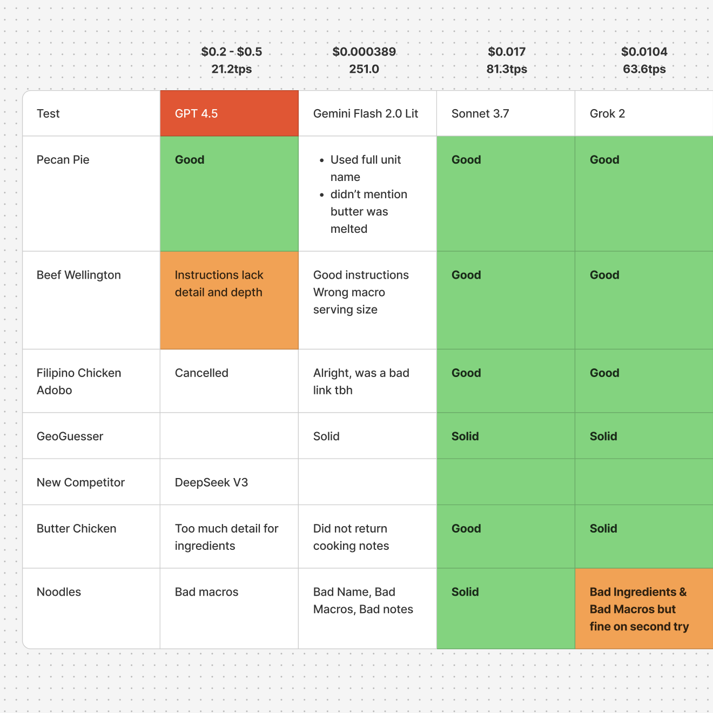
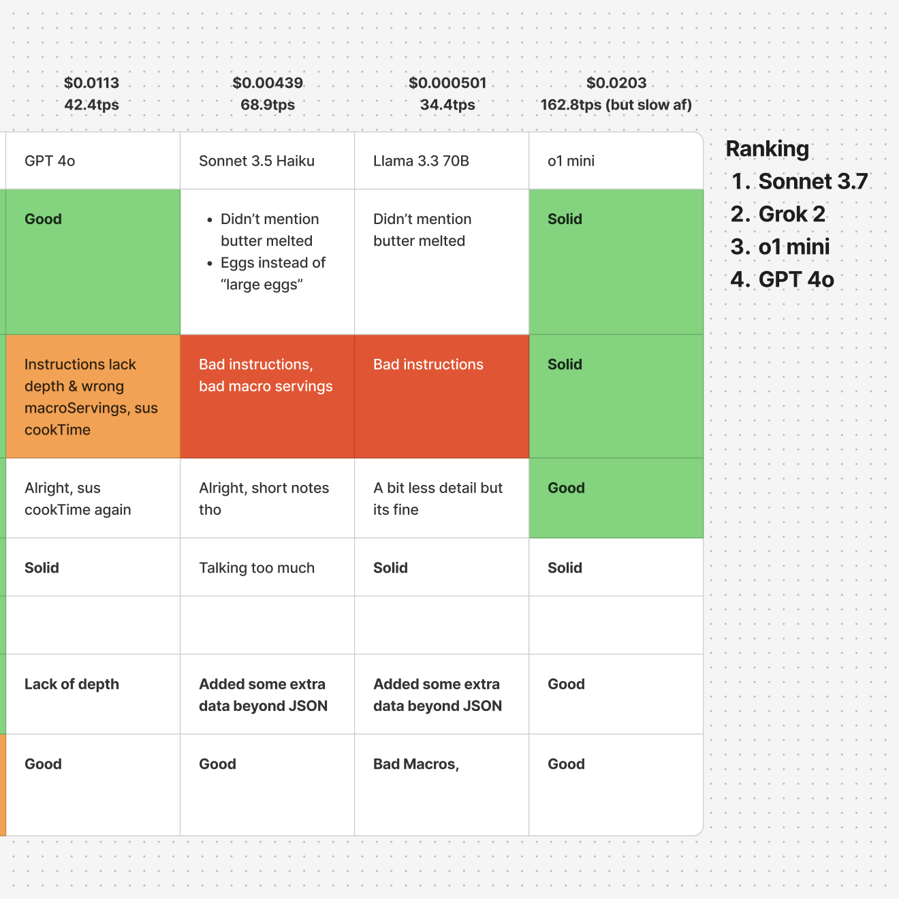

Foundation Model Evaluation


1 / 2
Recipe extraction from social media is messy. Videos hide ingredients in captions, descriptions are vague, and formats are all over the place. I needed an LLM that could handle the chaos consistently.
I tested nine models through OpenRouter (GPT-4, several Claude variants, Gemini, and others) on real-world recipes. The goal: clean ingredient parsing, properly formatted instructions, and reliable JSON output without hallucinations.
Claude Sonnet 3.7 won. It balanced accuracy, structured output, and cost better than the rest. The table above shows how all nine models compared.